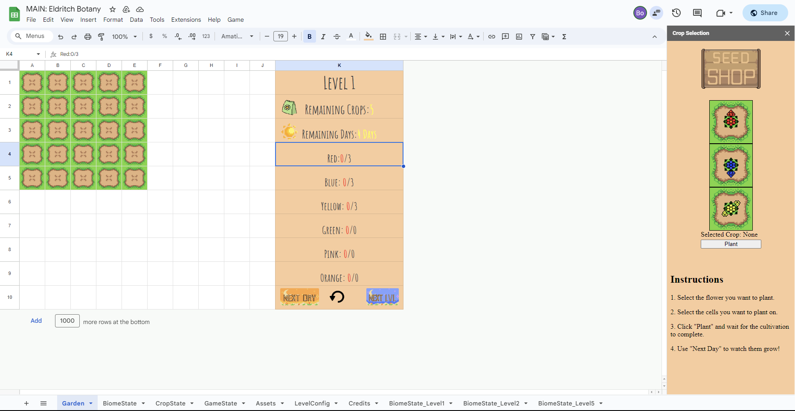
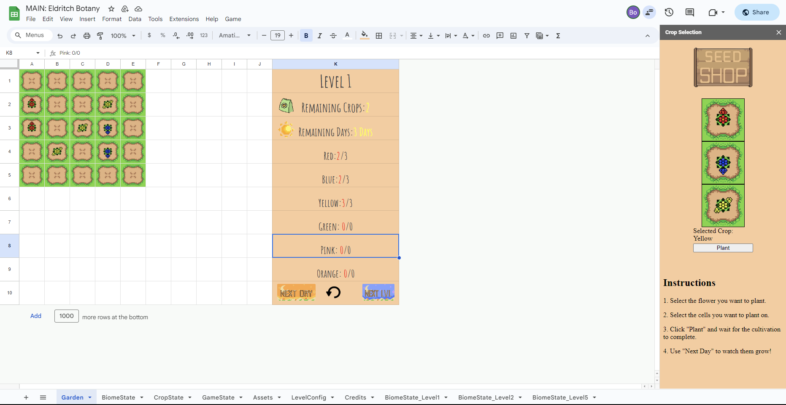
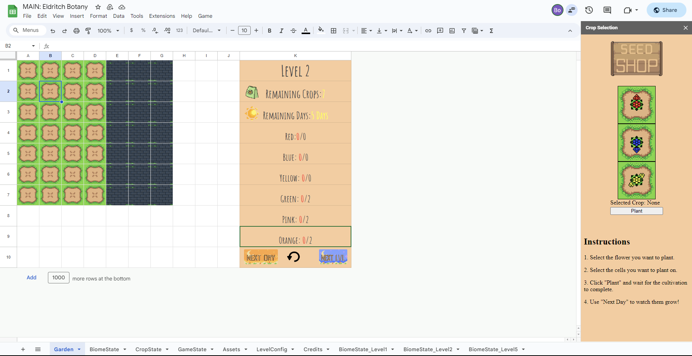
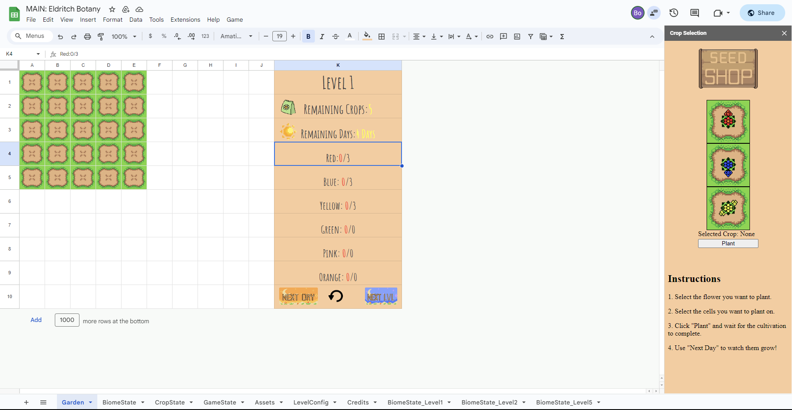
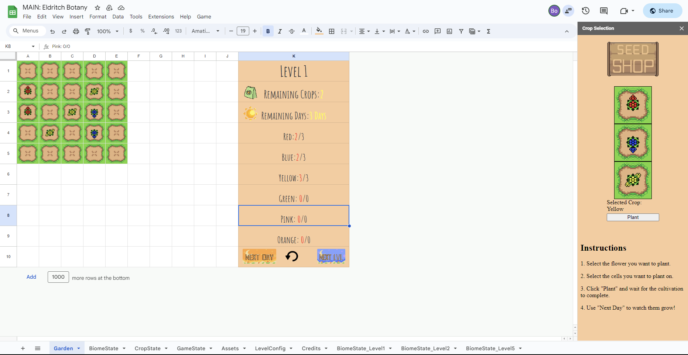
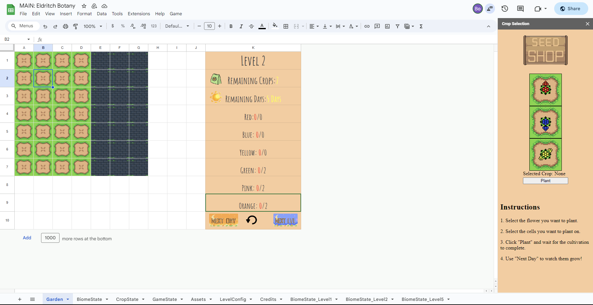

What part did I do?
UI&Art Assets
I was responsible for implementing art assets and designing the UI for this game. Given the
complexity of inserting images through app scripts in Google Sheets, I used an Asset Sheet to
store all art assets efficiently. This approach allows easy copying and pasting of specific
assets with their cell numbers, from the Asset Sheet into the Game Sheet.
In-game UI includes Next Day Button, Restart Button, Next Level Button, and Game Stats Panel. To
ensure real-time updates of game statistics while the game is in progress, I created an
additional sheet to track the values of each stat, organized in a dictionary-like structure with
key-value pairs. Changes in stat numbers will trigger the UpdateInGameUI function, dynamically
fetching the current key's value and updating the UI accordingly.
Additionally, for the consideration of better user experience, I added a feature where the text
color of collected crop numbers is red if they are less than the goal. Therefore, the
SetTextFormat function is required for parsing the string value in the cell and adjusting the
color for specific characters based on the stats value.
Resources Management System (Rewards,
Shops)
Another two crucial system I was responsible for is the rewards system and shop system which
handles spawning game items on a specific position for players.
For the reward system, In Dracomaton, players will get different rewards (Items, Forms etc.)
based on the room they entered and finished, for example, clearing a health room will reward
players health portion. Various room types will emerge in the game loop as the game progresses.
Therefore, I created a resource management system to organize all the rewards/resources in the
game to work as a general helper function, including every type of resource, such as UI icons,
Damage Text, and even VFX.
To explain how the resource management system works, the ResourcesManager.cs is a singleton
class that fetches resource objects (prefabs) from the project folders to separate lists when
awake. For code clarity, I used a partial class, which allows each resource type to have its own
manager to make the code more readable and generate a random object more easily by just calling
the function in the corresponding manager-script. Since each manager script is individual,
programmers can create many single manager scripts without complicated primary resources manager
script.
For the shop system, I was responsible for offering three shop items (mostly the same object as
rewards) in the shop room for players. One of the three items is always a Health portion for
game balance reason and the other two can be randomly chosen from any possible objects. The way
i fulfill these is by making a shop item position prefab that has been preset a spawning method,
which allows it to be easily moved to any position on the screen and it is. For example, if the
item type is Random, it means this position will spawn a random item, otherwise, it will only
spawn the selected type of item. Once the shop room is awake, the shop room manager will
populate three shop item positions in the game.
UI
Mod Menu is the crucial game UI in Dracomaton. There are two types of slots in the game: the
upper slots are Form slots, and the lower slots are Mods slots. The mechanics of Dracomaton is
that players can switch the form and mod by swapping their positions. For example, if players
drag Fire Form to the () Form’s mod slot, the code will automatically unequip Fire Form and turn
it into ()Form’s mod.
I created the mod menu functions from scratch, including implementing UI assets, implementing
functions, and connecting UI with backend codes.
 




